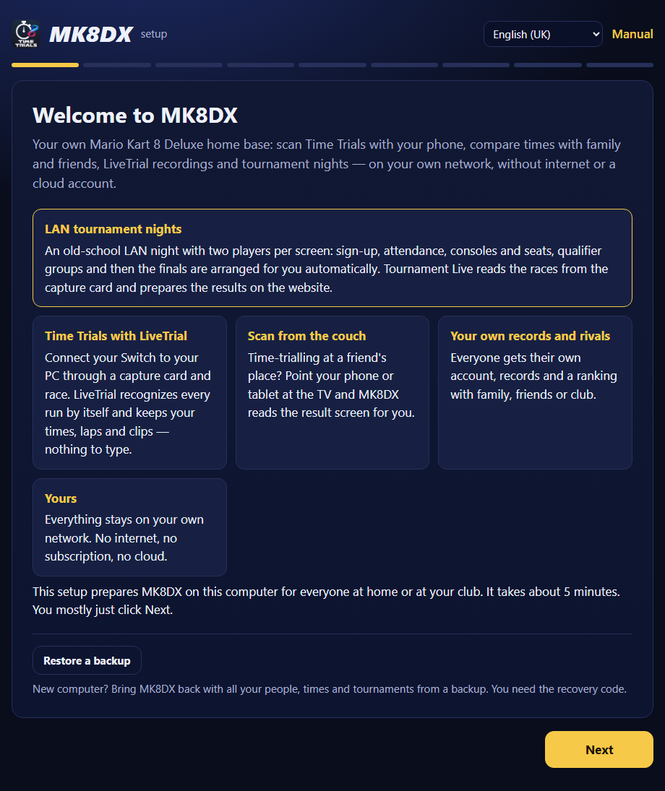

仅显示与你的选择对应的步骤。
在家或在俱乐部使用 MK8DX — 使用手册
本文是英文版手册的机器翻译，以英文版为准。欢迎通过“Translation correction”问题表单提交更正。
本手册一步步带你从一台空白电脑走到一个打完比赛的晚上。你不需要任何 IT 知识。请按顺序阅读各章；每一章都以前一章为基础。
先说实话： 家庭和俱乐部安装自 0.2.0 版起正式发布。Windows 11 已经过完整的端到端测试，包括网络中的一部 Android 手机。Linux 只在 WSL 2 中测试过，尚未在独立的 Linux 电脑或树莓派（Raspberry Pi）上测试。macOS 软件包已经构建，但尚未在真正的 Mac 上测试，iPhone 也尚未测试。凡是尚未测试或尚未构建的地方，相应步骤都会注明。
如何阅读一个步骤： 操作 后面是你要做的事，你会看到 后面是随后应当发生的情况，看到的不一样？ 后面是遇到这种情况时该怎么做。粗体字是你在屏幕上看到的完全一样的按钮或文字。
1. 什么是在家或在俱乐部使用的 MK8DX？你需要什么？
MK8DX 是一个为《马力欧卡丁车8 豪华版》（Mario Kart 8 Deluxe）打造的网站：用来保存和比较计时赛成绩、LiveTrial 录像和锦标赛之夜。使用这种安装方式时，网站运行在你自己网络中的一台电脑上。同一网络中的手机、平板和其他电脑都通过这台电脑打开网站。没有任何数据会发送到互联网。
每个人都用一张个人 登录卡 登录：一张带二维码的卡片。二维码是一种方形条码，你可以用手机或平板的相机扫描。
在本手册中，运行 MK8DX 的电脑称为 MK8DX 电脑。
你需要：
- 一台在大家玩的时候一直开着的电脑： 使用 Intel 或 AMD 处理器的 Windows 11、Linux 或 macOS。建议 8 GB 内存。安装程序会检查至少有 6 GB 可用磁盘空间。
- 一个家庭网络： 你的路由器的 Wi-Fi 或网线。路由器是建立你的网络的那个盒子（通常来自你的网络服务商）。所有设备都必须在同一个网络中。不要使用访客网络：它通常会把设备彼此隔开。
- 手机、平板或其他电脑 供玩家使用，最好带相机，以便扫描二维码。
- 一台打印机 便于打印登录卡和恢复码，但不是必需的。
你不需要：
- 玩的时候不需要互联网。 只有在准备阶段，你需要下载一次 Docker、Python 和 MK8DX 软件包（或者由别人用 U 盘交给你）。
- 不需要其他公司的账户，不需要电子邮件地址，也不需要云服务。
- 不需要订阅。 MK8DX 和 Python 都是免费的。Docker Desktop 对个人使用和小型组织免费；具体条款见 Docker 官网。在 Linux 上你使用免费的 Docker Engine。
2. 准备电脑
MK8DX 需要两个免费的辅助程序：
- Docker 在相互隔离的“容器”中运行程序。MK8DX 的网站和数据库就运行在这些容器里。在 Windows 和 macOS 上，这个程序叫 Docker Desktop。
- Python 是一种编程语言。MK8DX 安装程序就是用它编写的。你需要 Python 3.12 到 3.15。
只做与你的电脑对应的部分（2A、2B 或 2C），跳过另外两部分。
2A. 准备 Windows 11
- 操作 查看你的电脑使用哪种处理器：开始 → Settings（设置）→ System（系统）→ About（关于），看 System type（系统类型）那一行。你会看到 “64-bit operating system, x64-based processor”（64 位操作系统，基于 x64 的处理器）。看到的不一样？ 如果显示 ARM，则 MK8DX 的 Windows 软件包不适用：它只有 x64（Intel 和 AMD）版本。
- 操作 先安装 WSL（Windows Subsystem for Linux，适用于 Linux 的 Windows 子系统）。它是 Windows 的一部分，Docker 运行在它之上；没有 WSL，Docker Desktop 无法安装。右键单击开始按钮，选择 Terminal (Admin)（终端（管理员））或 Windows PowerShell (Admin)（Windows PowerShell（管理员））。当 Windows 请求权限时，点击 Yes（是）。输入
wsl --install并按 Enter。你会看到 Windows 下载并安装 WSL 和 Ubuntu；这需要几分钟。最后它会提示你必须重启电脑。请重启电脑。看到的不一样？ 如果重启后打开一个窗口，要求为 Ubuntu 设置用户名和密码：输入你自己选的名字和密码（MK8DX 不需要它们），然后关闭窗口。如果提示 WSL 已经安装，请输入wsl --update并按 Enter。如果提示中提到 virtualization（虚拟化）（“Virtual Machine Platform” 或 “virtualization”），说明电脑 BIOS 中的虚拟化已关闭；请把它打开（厂商通常称之为 Intel VT-x 或 AMD-V），或者找人帮忙。 - 操作 从 docker.com 下载适用于 Windows（x86_64 / AMD64）的 Docker Desktop，并打开下载的文件。你会看到 Docker 安装程序，其中有使用 WSL 2 的选项。WSL 是 Windows 的一部分，Docker 运行在它之上。保持该选项勾选，然后点击 OK（确定）。看到的不一样？ 如果 Windows 询问是否允许此应用进行更改，点击 Yes（是）。
- 操作 等待安装完成；如果 Docker 要求重启电脑，请重启。你会看到 重启后 Docker Desktop 自动打开（或者你自己从开始菜单打开它）。第一次使用时，Docker 会要求你接受它的条款。看到的不一样？ 如果 Docker 要求你登录或创建账户：MK8DX 不需要 Docker 账户，如果 Docker 提供跳过选项就跳过。如果 Docker 仍然提示缺少 WSL 或必须更新 WSL，请再做一遍第 2 步（
wsl --install或wsl --update）并重启。 - 操作 在 Docker Desktop 窗口中等待。你会看到 左下角显示 Engine running（引擎正在运行）。看到的不一样？ “Engine starting”（引擎正在启动）可能需要几分钟。如果卡住或显示错误，请重启电脑并再次打开 Docker Desktop。Docker 必须处于普通的 Linux 容器模式（而不是“Windows containers”）。
- 操作 前往 python.org → Downloads（下载），下载适用于 Windows 的 Python install manager（Python 安装管理器）（文件以
.msix结尾）。这是目前在 Windows 上安装 Python 的官方方式。打开下载的文件并点击 Install（安装）。你会看到 Windows 安装 Python 安装管理器；之后你可以关闭窗口。看到的不一样？ 你也可以从 Microsoft Store 安装：搜索 “Python install manager” 并点击 Install（安装）。两种方式二选一，不要都用。 - 操作 点击开始，输入
PowerShell，打开 Windows PowerShell，输入py install 3.15并按 Enter。这一步安装 Python 本身（安装管理器只是获取 Python 的工具）。你会看到 第一次会有几个检查设置的问题；按 Enter（采用建议选项）或输入y回答。然后 Python 被下载并安装。关于把某个文件夹添加到 PATH 的问题可以回答y；这不是必需的。看到的不一样？ 请按上面的方法安装正好 3.15；3.12、3.13 或 3.14 也可以，更新的版本（3.16 或更高）暂时不行。 - 操作 关闭 PowerShell，重新打开，输入
python --version并按 Enter。你会看到Python 3.15后面跟着一个数字，例如Python 3.15.2。看到的不一样？ 如果打开了 Microsoft Store，或者提示找不到 python：点击开始，输入 Manage app execution aliases（管理应用执行别名）并打开它。打开 Python (default)，关闭 App Installer python.exe 和 python3.exe。如果你以前安装过旧版 Python 或 “Python launcher”，请通过 Settings → Apps → Installed apps（设置 → 应用 → 已安装的应用）将其删除，然后重试。
2B. 准备 Linux（Ubuntu 或 Debian）
Linux 尚未与 MK8DX 一起经过端到端测试。以下步骤针对 Ubuntu 24.04 或更新版本编写。你需要在 终端 中输入这些命令：终端是一个通过文字命令操作的窗口（在 Ubuntu 中按 Ctrl+Alt+T 打开）。每条命令都以 Enter 结束。命令前面的 sudo 表示“以这台电脑的管理员身份”：Linux 随后会要求输入你的密码，输入时你看不到任何字符。这是正常的。
- 操作 输入
python3 --version。你会看到Python 3.12、3.13、3.14或3.15。看到的不一样？ 更低的版本号（例如 Debian 12 自带 3.11）太旧；3.16 或更高版本暂不支持。这时你需要更新版本的 Linux；Ubuntu 24.04 自带 Python 3.12。 - 操作 输入
sudo apt update，然后输入sudo apt install docker.io docker-compose-v2 python3-venv unzip。当询问是否继续时，输入 Y 并按 Enter。你会看到 软件包被下载并安装。看到的不一样？ 如果 apt 找不到某个软件包，说明它在你的 Linux 上叫别的名字（在 Debian 上可能会这样）。继续操作，并在第 5 步中检查 Docker Compose 是否可用。 - 操作 输入
sudo systemctl enable --now docker。这会立即启动 Docker，并在每次电脑启动时启动它。你会看到 没有错误（有时会出现一行以 “Created symlink” 开头的信息）。 - 操作 输入
sudo usermod -aG docker $USER。这会赋予你的用户使用 Docker 的权限。然后注销并重新登录（或者重启）：这个权限只有在重新登录后才生效。你会看到 没有错误。→ 注意： docker 组中的任何人实际上都拥有这台电脑的管理员权限。只把你自己加进去。 - 操作 用
docker info和docker compose version进行检查。你会看到 一列没有错误的详细信息，以及带版本号的 “Docker Compose version”。看到的不一样？ 出现 “permission denied”（权限被拒绝）：做第 4 步，别忘了注销。出现 “Cannot connect to the Docker daemon”（无法连接到 Docker 守护进程）：做第 3 步。
防火墙 是一种保护机制，决定电脑允许哪些连接进入。如果你的 Linux 上启用了 ufw 或 firewalld 防火墙，第 3 章中的安装程序会显示让 MK8DX 通过的命令。
2C. 准备 macOS
注意： macOS 尚未在真正的 Mac 上测试过。以下步骤遵循安装程序在 macOS 上的预期。
- 操作 选择苹果菜单 → About This Mac（关于本机），查看 Chip（芯片）或 Processor（处理器）。你会看到 Apple 芯片（M1、M2 及更新）：使用软件包
macos-arm64。看到的不一样？ Intel 处理器：使用软件包macos-amd64。它需要 macOS 10.15 或更新版本，以及仍然支持你的 Mac 的 Docker Desktop 版本。 - 操作 从 docker.com 下载与芯片匹配的 Mac 版 Docker Desktop，打开下载的文件，把 Docker 拖到 Applications（应用程序）中。你会看到 Docker 出现在你的“应用程序”文件夹中。
- 操作 打开 Docker。接受条款；如果 macOS 要求输入密码，请输入。你会看到 过一会儿，Docker Desktop 窗口中显示 Engine running（引擎正在运行）。看到的不一样？ 如果 Docker 要求你登录：MK8DX 不需要 Docker 账户，如果 Docker 提供跳过选项就跳过。
- 操作 从 python.org 下载 Python 3.15 的 macOS 安装程序并打开。依次点击 Continue（继续）和 Install（安装）完成各步。你会看到 安装成功的提示。
- 操作 打开 Terminal（终端）（应用程序 → 实用工具 → 终端），输入
python3 --version并按 Enter。你会看到Python 3.12到3.15。看到的不一样？ 更低的版本号（例如 Apple 自带的 3.9）：关闭终端再重新打开。如果仍然较低，请再次从 python.org 安装 Python。 - 操作 在终端中输入
docker info。你会看到 一列没有错误的详细信息。看到的不一样？ 启动 Docker Desktop，等到显示 Engine running。
3. 安装 MK8DX
解压软件包
- 操作 下载适用于你的系统的家庭或俱乐部版 MK8DX 软件包：Windows、Linux 或 macOS；对于 Linux 和 macOS，还要选择你的处理器（amd64 或 arm64）。要检查下载是否正确，请将它的 SHA-256 与同一版本中
SHA256SUMS.txt里对应的那一行进行比较（Windows：Get-FileHash <file> -Algorithm SHA256；Linux：sha256sum <file>；macOS：shasum -a 256 <file>）；另见docs/RELEASE_PACKAGES.md#check-a-download。你会看到 你的“下载”文件夹中有一个 zip 文件。看到的不一样？ 如果浏览器警告该文件不安全或很少被下载：选择 Keep（保留）。Windows：然后右键单击 zip 文件 → Properties（属性），勾选底部的 Unblock（解除锁定），点击 OK（确定）。请在解压之前做这一步；否则 Windows（智能应用控制，Smart App Control）以后可能会阻止Start-MK8DX-LAN.cmd。不要关闭智能应用控制：关闭后只有重新安装 Windows 才能再次打开它。 - 操作 把 zip 文件解压到一个固定的文件夹，例如“文档”中的一个 MK8DX 文件夹。Windows：右键单击 zip 文件 → Extract All（全部解压缩）。请选择一个会一直保留的文件夹：以后 MK8DX 总是从这个文件夹启动，所以不要移动或删除它。你会看到 一个文件夹，其中包括
Start-MK8DX-LAN.cmd、README-FIRST.txt以及docs、images和tooling文件夹。看到的不一样？ 如果你只是在文件资源管理器中打开了 zip 文件，请真正解压它：从 zip 文件内部启动是行不通的。没有文件管理器的 Linux（服务器或 WSL）：unzip ~/Downloads/mk8dx-a2-linux-amd64-<version>.zip -d ~/Documents/MK8DX（换成你的文件名；unzip来自第 2B 章第 2 步）。
在 Windows 上启动
- 操作 在解压后的文件夹中，双击 Start-MK8DX-LAN.cmd。你会看到 一个显示 MK8DX 标志和带提示音的 3-2-1-GO 倒计时的窗口（如何关闭它），随后是 “MK8DX 软件包:”和 “私有安装:”等行。第一次还会显示 “正在准备附带的 Python 软件包（仅一次，无需互联网）。”和 “正在加载附带的 Docker 镜像。这可能需要几分钟。”这需要几分钟。然后显示 “MK8DX setup is open in your browser:”（MK8DX 安装程序已在浏览器中打开：），安装程序在你的浏览器中打开。看到的不一样？ 请看下面的消息说明。
- 操作 在安装程序中点击 完成之前，一直保持黑色窗口打开。窗口中也这样写着：“Keep this window open until you click Finish.”（在点击 Finish 之前请保持此窗口打开。）
Windows 黑色窗口中的消息：
- “缺少 Python 3.12 至 3.15。请从 python.org（或 Microsoft Store）安装 Python install manager，运行: py install 3.15，重新打开 PowerShell 后重试。”请做第 2A 章第 6 到 8 步，然后再次双击 Start-MK8DX-LAN.cmd。
- “Docker Desktop 未安装或未运行。请以 Linux 容器模式启动 Docker Desktop，等到它显示 "Engine running" 后重试。”启动 Docker Desktop，等到显示 Engine running，然后再次双击。
- 错误信息下方显示 “所选步骤已停止。重试前请阅读上面的消息。”阅读它上面的那一行，解决问题，然后按任意键关闭窗口。
在 Linux 和 macOS 上启动
- 操作 在解压后的文件夹中打开终端。Linux：如果你的文件管理器提供该选项，在文件夹中右键单击并选择 “Open in Terminal”（在终端中打开）。在 macOS 和 Linux 上也可以这样做：打开终端，输入
cd（后面带一个空格），把文件夹拖进窗口，然后按 Enter。你会看到 终端位于软件包文件夹中。 - 操作 输入
sh tooling/start-mk8dx.sh并按 Enter。你会看到 MK8DX 标志和 3-2-1-GO 倒计时，然后是 “MK8DX 软件包:”、Python 版本号和 “Docker Compose version”。第一次还会显示 “正在加载附带的 Docker 镜像。这可能需要几分钟。”和 “正在准备附带的 Python 软件包（仅一次，无需互联网）。”然后是 “私有安装:”和 “MK8DX setup is open in your browser:”（MK8DX 安装程序已在浏览器中打开：），安装程序在你的浏览器中打开。看到的不一样？ 如果没有打开浏览器，请把终端中以http://127.0.0.1:开头的地址复制到浏览器中。 - 操作 在点击 完成之前，一直保持终端打开。
Linux 和 macOS 终端中的消息：
- “缺少 Python 3.12 至 3.15。请安装它（Ubuntu/Debian: sudo apt install python3 python3-venv；macOS: python.org）后重试。”请再做一遍第 2B 或 2C 章。
- “Docker 未运行，或此用户无权使用它（Linux: sudo systemctl start docker，并加入 docker 组；macOS: 启动 Docker Desktop）。”Linux：做第 2B 章第 3 和第 4 步。macOS：启动 Docker Desktop。
- “无法创建私有 Python 环境（Ubuntu/Debian: sudo apt install python3-venv）。”按照第 2B 章第 2 步安装 python3-venv。
浏览器中的安装程序
安装程序是浏览器中的一个页面，只能在 MK8DX 电脑本机上使用。它使用你的浏览器的语言（游戏的 15 种语言之一；否则显示英语）。右上角是语言菜单（用来选择其他语言）和 使用手册：它会打开本手册。底部是 返回、有时还有 高级，以及 下一步。顶部的圆点显示你进行到了哪一步。
- 欢迎来到 MK8DX。操作 阅读屏幕内容并点击 下一步。你会看到 “快速检查”。此屏幕上的 恢复备份按钮仅用于新电脑（第 10 章）。
- 快速检查。操作 稍等片刻。你会看到 Docker Desktop 正在运行、磁盘可用空间充足（显示 GB 数）和 Windows, Linux or macOS 旁边出现三个绿色对勾。点击 下一步。看到的不一样？ 一个感叹号和一段说明，例如 “启动 Docker Desktop，等待显示“Engine running”，然后点击“重试”。”或 “请在此驱动器上至少释放 6 GB 空间。”。解决问题后点击 重试。在 Linux 上，第一项检查也叫 “Docker Desktop is running”；在那里它指的是 Docker Engine。
- 哪种安装？操作 保持选中 家庭、俱乐部或局域网之夜的网络，无需互联网（推荐），然后点击 下一步。你会看到 “你的网络”。
- 你的网络。 网络地址（IP 地址）是网络中各设备找到这台电脑所用的号码，就像门牌号一样。操作 阅读 “手机、平板和其他电脑可通过此地址访问 MK8DX：”下方的地址并把它记下来，例如
https://192.168.1.50。点击 安装。你会看到 在 Windows 上显示 “此网络已设置为家庭（专用）网络。”或 “Windows 目前将此网络视为公用网络。点击“安装”后，MK8DX 会将其设为专用网络，并且只放行 MK8DX。”。在 Linux 和 macOS 上，这里不会显示关于网络的句子。看到的不一样？ 如果电脑有多个连接（网线和 Wi-Fi），请点击 高级，在 “选择此电脑的另一个地址：”处选择手机所在网络的地址。如果显示 “未找到网络地址。”，请把电脑连接到你的家庭网络，然后点击 重试。 - 正在安装。操作 等待并保持窗口打开。你会看到 “正在设置 MK8DX。请保持此窗口打开。”，然后依次显示 “正在准备安装”、“允许网络访问（Windows 会请求许可）”、“正在启动数据库和网站”、“正在检查”，最后是 “MK8DX 正在运行。只剩两个简短步骤。”。点击 下一步。在 Windows 上，会有一个 Windows 窗口询问一次是否允许 Windows PowerShell 进行更改：点击 Yes（是）。这样 MK8DX 会把你的家庭网络标记为专用网络，并且只让 MK8DX 通过防火墙（Windows 的保护机制）。如果以前已在这台电脑和这个地址上安装过 MK8DX，该许可仍然存在，Windows 不会再次询问。看到的不一样？ 出现红色错误：点击 详情查看出了什么问题，解决后点击 重试。如果你在 Windows 窗口中点击了“否”，会显示 Windows 不允许此更改；点击 重试，然后点击 Yes（是）。
- 仅限 Linux：防火墙。操作 在安装过程中或安装之后，点击 详情，找到以 “Network:” 开头的那一行。你会看到 “not-needed”（无需操作），或者 “manual:” 后面跟着一条命令，例如
sudo ufw allow from 192.168.1.0/24 to 192.168.1.50 port 80,443 proto tcp。→ 然后操作： 在终端中准确输入那条命令（使用那里显示的你自己的地址）。没有这条命令，手机就打不开网站。 - 你的管理员账户。 管理员 是添加人员和制作登录卡的人；也就是你。操作 在 你的名称处输入一个名字，例如“爸爸”或“俱乐部团队”，然后点击 下一步。这个名字只在本安装中可见。你会看到 “谁来玩？”
- 谁来玩？操作 在 名称（每行一个） 处输入玩家的名字，每个名字占一行，然后点击 添加。或者直接点击 跳过：以后你可以在 MK8DX beheer 中用完全相同的方式完成（第 5 章）。你会看到 名字出现在 “此安装中：”下方，你自己的名字后面带有 “(管理员)”。点击 下一步。
- 在手机和电脑上登录。操作 你现在就可以在这里制作登录卡（第 5 章和第 6 章会说明怎么做），也可以直接点击 下一步。你会看到 “完成！尽情享受比赛吧。”
- 完成！尽情享受比赛吧。操作 记下两个地址：网站（例如
https://192.168.1.50）和 新设备（例如http://192.168.1.50/setup）。保持三个勾选项打开：随 Windows 启动 MK8DX、每晚创建一份备份和 在桌面上放置“MK8DX beheer”快捷方式。点击 完成。你会看到 你的恢复码（第 4 章）。→ 在 Linux 和 macOS 上，第一个勾选项叫 “电脑启动时启动 MK8DX”。在 macOS 上，它会在你登录时打开 Docker Desktop。在 Linux 上，第 2B 章中的sudo systemctl enable --now docker负责这件事；如果你还没有做，安装程序会在点击“完成”后显示这条命令。 - 关闭。操作 阅读第 4 章并保管好恢复码。然后点击 关闭。你会看到 “现在可以关闭此窗口了。”关闭浏览器标签页。在 Windows 上，黑色窗口会要求按一个键；按任意键后它就会关闭。如果你什么都不做，安装页面会在 10 分钟后自动停止。MK8DX 本身会继续运行。



4. 恢复码和备份文件夹
备份 是 MK8DX 中所有内容的一份备用副本：人员、成绩、锦标赛和设置。MK8DX 每晚 03:00 创建一次备份，并保留最新的 7 份。备份是加密的：没有密钥就无法读取。
恢复码 就是这把密钥。它由五组、每组四个字母和数字组成，例如 ABCD-EFGH-JKLM-NPQR-STUV。只有在另一台电脑上恢复备份时才需要它。
- 操作 点击 完成之后，查看 MK8DX 恢复码卡片。你会看到 恢复码、句子 “没有此代码就无法打开备份。它只显示一次。”，以及下方备份存放的文件夹。
- 操作 把恢复码抄在纸上，或者点击 打印卡片打印此页面。逐个字母核对。你会看到 纸上的恢复码。→ 为什么只显示一次？ MK8DX 会在这台电脑上受保护地保存恢复码，用于每晚的备份，但再也不会显示它。如果电脑坏了，你就只剩下那张纸。
- 操作 把纸保存在安全的地方，不要放在电脑旁边。任何拿到恢复码和备份的人都能打开所有内容。
备份的位置：
- Windows： 在“文档”文件夹中的
MK8DX-backups文件夹里（磁盘上：C:\Users\<your name>\Documents\MK8DX-backups）。 - Linux 和 macOS： 在你的主文件夹中的
Documents/MK8DX-backups文件夹里（即~/Documents/MK8DX-backups）。即使 Linux 使用其他语言，这个文件夹也叫 Documents。 - 安装程序会在恢复码下方显示确切的文件夹。
时不时把 MK8DX-backups 文件夹复制到 U 盘或另一块硬盘上。否则，如果电脑坏了，备份就只存在于那台坏掉的电脑上。
如果你取消勾选 每晚创建一份备份，就不会得到恢复码，也不会创建备份。如果你以后在 MK8DX beheer 中重新打开它并点击 完成，那时就会看到你的恢复码。

5. 人员和登录卡（MK8DX beheer）
MK8DX beheer（荷兰语，意为“MK8DX 管理”）与安装程序是同一个页面，只是供以后使用：添加人员和制作登录卡。它只能在 MK8DX 电脑本机上使用。桌面快捷方式在所有语言中都叫 “MK8DX beheer”；页面标题是 MK8DX 管理。
账户 是登录的人。玩家 是排名中的选手，带有自己的成绩。登录后，每个人在网站上选择或认领自己的玩家。名字从不会被自动关联。
打开 MK8DX beheer
- 操作（Windows）： 双击桌面上的 MK8DX beheer。这个快捷方式启动的内容与 Start-MK8DX-LAN.cmd 相同。→ 你会看到： 启动窗口及其简短的赛车开场，然后浏览器中出现顶部写着 “管理” 的页面，标题为 MK8DX 管理。→ 看到的不一样？ 没有快捷方式：在 MK8DX 文件夹中双击 Start-MK8DX-LAN.cmd。
- 操作（Linux）： 从桌面或应用菜单启动 MK8DX beheer。在某些 Linux 桌面上，你必须先允许这样的图标运行（右键单击它并选择允许启动的选项）。也可以像第 3 章那样，在 MK8DX 文件夹中运行
sh tooling/start-mk8dx.sh。→ 你会看到： 一个终端，然后是 MK8DX 管理 页面。 - 操作（macOS，未测试）： 双击桌面上的 MK8DX beheer.command，或者像第 3 章那样运行
sh tooling/start-mk8dx.sh。→ 你会看到： 终端，然后是 MK8DX 管理 页面。
添加人员
- 操作 在 名称（每行一个） 处输入名字，然后点击 添加。你会看到 名字出现在 “此安装中：”下方。
- 操作 点击 下一步。你会看到 分为两步的 “在手机和电脑上登录”：第 1 步 · 准备设备，其中有 准备设备卡片（每台设备一次，此时还不会让你登录）；以及 第 2 步 · 以正确的人的身份登录，其中每个人都有一个带 生成卡片按钮的框。
制作和打印卡片
- 操作 点击某个人旁边的 生成卡片。你会看到 一个二维码，带有 “有效期至”和一个时间。一张卡只能使用一次，有效期 15 分钟。让那个人立即扫描（第 6 章），或者把它打印出来。
- 操作 先制作好你需要的所有卡片，然后点击 打印卡片。你会看到 浏览器的打印窗口，屏幕上的每张卡都在其中，包括“准备设备”卡片。
- 操作 如果你想在手机上登录，也为自己制作一张卡（名字后面带 “(administrator)” 的那个）。
更换或吊销卡片
- 新卡片：为那个人制作一张新卡。此后，那个人在此屏幕上的上一张卡就会失效。
- 撤销卡片：卡片立即失效。你会看到 “已撤销：此卡片不再有效。”。当卡片丢失或给错了人时使用它。
- 你只能吊销仍在此屏幕上的卡片。如果你已经关闭了 MK8DX beheer，未使用的卡片会在 15 分钟后自动过期。如果它可能已经被使用过，请选择下方的 在所有地方退出登录。
让某人在所有地方退出登录
- 操作 打开 MK8DX beheer。在第一个屏幕上，每个人都有一个 在所有地方退出登录按钮。点击它。你会看到 按钮变为 确定吗？再点击一次。
- 操作 再点击一次。你会看到 “已在所有设备上退出登录。使用新卡片即可让此人重新登录。”。此人现在已在网站和应用中退出登录，一键切换到该账户的功能消失，此人尚未使用的卡片也会失效。看到的不一样？ 在你自己的名字旁边，第二次点击会显示 “你自己可以通过网站上的账户菜单退出登录（“在所有设备上退出登录”）。”，并且不会让任何人退出登录。
关闭 MK8DX beheer
- 操作 一直点击 下一步，直到出现 “完成！尽情享受比赛吧。”，保持勾选项打开，点击 完成，然后点击 关闭。你会看到 “现在可以关闭此窗口了。”MK8DX 继续运行。


6. 准备设备并登录
证书 是一种数字身份证明。有了它，手机就能确定自己是在和你的 MK8DX 电脑通信，而不是别的什么，并且连接是加密的（https）。由于 MK8DX 不依赖互联网工作，安装程序会自己制作证书。每台设备都必须学会信任它一次。指纹 是一段只属于这张证书的简短代码；你用它来核对自己安装的是正确的证书。
为什么即使在家、没有互联网也需要证书？
- 确定那就是你的 MK8DX。 在家庭或俱乐部网络中，同一 Wi-Fi 上的任何人都可以冒充你的 MK8DX 电脑，例如一位带着笔记本电脑的客人。没有证书，你的手机就无法分辨。有了证书，浏览器会拒绝其他任何电脑。
- 没有人能窃听。 登录卡、你的登录会话以及你输入的所有内容都会经过加密在 Wi-Fi 上传输。
- 为什么 MK8DX 要自己制作证书。 互联网上的网站使用的是知名签发机构的证书，这些机构已经内置在每台设备中。它们不会为
192.168.1.50这样的家庭地址签发证书，而且没有互联网就无法工作。因此 MK8DX 在安装时自己制作证书，而你要告诉每台设备一次：可以信任它。 - 安装它意味着你允许了什么。 这张证书只用于 MK8DX 的私有网络地址，它的私钥受保护地保存在 MK8DX 电脑上。只安装你自己的 MK8DX 的证书（核对指纹），当你不再使用那个安装时，把证书从设备上删除。
如果不安装证书，哪些功能无法使用？
- 每次访问时，浏览器都会显示整页警告，例如 “Your connection is not private”（你的连接不是私密连接）。你可以点掉它，但不要这样做：那样你就再也无法看出自己是否真的在和你的 MK8DX 通信。
- 即使点掉警告，浏览器通知 也无法使用：浏览器只在证书受信任时才允许通知。其他浏览器功能也可能拒绝工作。
- 不安装证书也能用的是：Android 应用。它会从 准备设备卡片中自行获知证书（第 7 章）。同一设备上的浏览器仍然需要证书。
MK8DX 电脑本身
运行 MK8DX 的电脑也必须信任 MK8DX 一次，否则它的浏览器会对网站发出警告。
- 操作 打开 MK8DX beheer，一直点击 下一步，直到出现 “在手机和电脑上登录”，查看 第 1 步下方的 这台电脑区块。你会看到 “这台电脑已信任 MK8DX。”这样就完成了。看到的不一样？ 如果显示 准备这台电脑按钮，请转到第 2 步。
- 操作 点击 准备这台电脑。你会看到 一个 Windows 窗口 Security Warning（安全警告），询问你是否要安装证书，并显示一个 thumbprint (sha1)（指纹（sha1））。把它与 MK8DX beheer 中的指纹进行比较；如果一致，点击 Yes（是）。你会看到 “这台电脑已信任 MK8DX。”看到的不一样？ 如果你点击了 No（否），或者指纹不一致：不要点击“是”，关闭窗口并找人帮忙。在 Linux 或 macOS 上，这里没有按钮，而是提示你在这台电脑的浏览器中打开“准备设备”下方的地址；然后在这台电脑上按照下面的步骤操作。
每台设备一次：准备设备
- 操作 把手机、平板或电脑连接到与 MK8DX 电脑相同的 Wi-Fi 或有线网络。在手机上，不要用移动数据代替 Wi-Fi。你会看到 连接处显示你自己的 Wi-Fi 名称。
- 操作 用相机扫描 准备设备卡片上的二维码（在 MK8DX beheer 中或纸上），然后点按出现的链接。没有相机时，在浏览器中输入 新设备地址，例如
http://192.168.1.50/setup。你会看到 准备此设备页面，上面写着 “每部手机、平板或电脑只需操作一次。之后扫描你的个人登录卡。”看到的不一样？ 如果页面打不开：检查网络，并确认 MK8DX 电脑已开机（第 11 章）。 - 操作 把 “请先核对此代码。”下方的代码与“准备设备”卡片上的 指纹（四组、每组四个字符）进行比较。你会看到 完全相同的代码。看到的不一样？ 如果代码不同，什么都不要安装。你可能连在另一个网络或另一个地址上；请先检查这一点。
- 操作 按照与你的设备对应的部分操作。你正在使用的设备对应的部分已经展开；要查看其他设备，请在 “其他类型的设备？”下展开。点按 下载证书（iPhone 和 iPad：下载描述文件），然后按照下面的步骤操作。你会看到 底部显示 “完成了？扫描你的个人登录卡，或打开”以及网站地址。
“准备此设备”页面上的步骤：
- Android： 点按按钮下载证书。打开“设置”并搜索“证书”（通常是：安全 → 更多安全设置 → 加密与凭据 → 安装证书 → CA 证书）。选择下载的 MK8DX 文件，并用你的 PIN 确认。菜单名称因手机品牌而异。
- iPhone 和 iPad（尚未用此安装测试）： 点按按钮下载描述文件并允许。打开 设置 → 已下载描述文件 → 安装。然后打开 设置 → 通用 → 关于本机 → 证书信任设置 → 打开 MK8DX。
- Windows： 下载证书并打开它。选择 Install Certificate（安装证书）→ Current User（当前用户）→ Place all certificates in the following store（将所有的证书都放入下列存储）→ Trusted Root Certification Authorities（受信任的根证书颁发机构）。不要选择 Intermediate Certification Authorities（中级证书颁发机构）。重启浏览器。
- Mac（macOS 尚未经过端到端测试）： 下载证书并打开它；“钥匙串访问”会打开。打开 MK8DX 证书 → 信任 → 始终信任。
- Linux（此方式尚未经过端到端测试）： 把同一张证书添加到你的发行版或浏览器的受信任根证书存储中。具体步骤因发行版而异。在 Ubuntu 和 Debian 上（已在 WSL 2 中测试）：下载的
root.crt是 DER 格式，所以请在安装时转换它：sudo openssl x509 -inform DER -in ~/Downloads/root.crt -out /usr/local/share/ca-certificates/mk8dx.crt，然后运行sudo update-ca-certificates。Linux 上的 Firefox 和 Chrome 可能使用自己的证书存储；如果浏览器仍然警告，请在其证书设置（Authorities，证书颁发机构）中导入同一个文件。
用你的个人卡片登录
- 操作 扫描你自己的卡片（带有你名字的那张），然后点按链接。你会看到 加入此 MK8DX 安装以及 “请先确认此 HTTPS 地址属于你信任的主机。此邀请只能使用一次。”。浏览器地址栏必须显示网站地址，例如
https://192.168.1.50。看到的不一样？ 浏览器出现关于证书或不安全连接的警告：绝对不要点掉它。请先完成上面的“准备设备”。 - 操作 检查 你将登录为： 下方卡片上的名字。如果是你的名字，等待 “邀请已就绪。确认即可登录。”，然后点按 接受邀请。如果显示的是别人的名字，不要点按接受：这张卡对正确的人仍然有效。你会看到 “你已登录为”和你的名字，以及 继续前往 MK8DX。点按它。看到的不一样？ “此邀请无效。请向管理员索取新的二维码。”或 “登录失败。请向管理员索取新的邀请。”：卡片已被使用、已过期或已被吊销。请管理员制作一张 新卡片。
- 操作 按照网站上的欢迎步骤操作：你在这里是否已经有成绩或参加过锦标赛，以及你希望别人怎么称呼你。你就是这样选择或认领自己的玩家的。你会看到 你的名字和你的成绩。看到的不一样？ 如果你卡片上的名字（例如“爸爸”）没有被预先填好：这是正常的。卡片上的名字只是 MK8DX 管理中的标签；你的玩家名字由你自己在这里选择。
同一个人的另一台设备
- 玩家可以自己制作卡片：网站的账户菜单中有 也在另一台设备上登录。它会打开 在另一台设备上登录，其中有一张 “Works once, valid until”（仅限使用一次，有效期至）某个时间的卡片。用另一台设备扫描它。只把它出示给你自己的设备：任何扫描它的人都会登录到你的账户。
- 管理员没有这个按钮。他们在 MK8DX beheer 中为自己制作一张 新卡片。
- 新设备总是要先做一次“准备设备”。
- 没有相机，或者要在 MK8DX 电脑本机上登录？ 在 MK8DX beheer 中制作那个人的卡片，然后点击 在这台电脑上登录（在 MK8DX 电脑的浏览器中打开登录页面）或 复制链接。复制的链接只能发给那个人本人，例如通过私信：任何打开它的人都能以那个人的身份登录。它只能使用一次，有效期 15 分钟。在“准备设备”卡片上，复制地址会复制地址；地址不是秘密。
在某台设备上退出此安装： 在你安装证书时使用的同一处设置中，把证书再删除掉。


7. Android 应用和 LiveTrial
配对 Android 应用
这需要 2.95.0 或更新版本的应用。应用不需要在 Android 设置中安装证书，但登录要通过手机的浏览器进行。所以请先在这部手机上完成第 6 章：“准备设备”，并在浏览器中用你的卡片登录。
- 操作 打开应用。全新安装时，它会从 选择你的社区 开始；否则，点按应用顶部的社区名称，然后点按 添加社区。你会看到 选择你的社区，其中有 在家或在俱乐部 和 在线社区 两个面板。在 在家或在俱乐部 下点按 扫描二维码。
- 操作 如有需要，点按 使用相机 并允许使用相机。扫描 准备设备卡片上的二维码。你会看到 确认这是你的安装，其中有 地址 和 密钥指纹 (SHA-256)。看到的不一样？ “这不是“准备设备”卡片的二维码。”：你扫描的是个人卡片。请扫描“准备设备”卡片。如果扫描失败：在 MK8DX 电脑上，点击 MK8DX beheer 中 准备设备卡片上的 复制地址，把该链接发送到手机（它不是机密），粘贴到 或粘贴设置链接 处，然后点按 下一步。只输入简短的 New device 地址（例如
http://192.168.1.50/setup）是不够的：应用还需要二维码和复制的链接中包含的密钥指纹，否则会显示 “这不是“准备设备”卡片的二维码。”。在 0.2.6 版中，复制地址 仍然只复制简短地址；在该版本中请扫描卡片。 - 操作 把地址与网站地址进行比较，把那串长密钥与“准备此设备”页面进行比较：在那里展开 完整指纹，查看 “根公钥 SHA-256 (SPKI)”。你可以在另一台设备上打开那个页面，也可以在 MK8DX 电脑本机上通过 New device 地址打开。你会看到 两者完全相同。点按 连接（如果应用之前设置的是另一台服务器，请确认更改）。看到的不一样？ 如果不同，点按 返回，不要连接。“Could not get a matching certificate from”（无法从以下地址获取匹配的证书）：检查网络并确认 MK8DX 电脑已开机，然后重试。
- 操作 在 设置 中的 此手机上的玩家 处，点按 登录。应用会提醒你：在家或在俱乐部时，你用个人登录卡登录，而不是用电子邮件。点按 登录以同步。你会看到 浏览器打开批准页面，显示 “MK8DX Time Trials for Android 请求访问你的账户。” 以及 设备代码。确认它与应用显示的 设备代码 相同（0.2.6 版尚未在此页面上显示该代码），只有在你刚刚在自己手机上发起此操作时才批准，然后点按 批准设备。页面显示 “设备已批准。返回应用以完成登录。”。返回应用；应用会显示 “已登录为” 和你的名字。看到的不一样？ 如果浏览器要求你登录，请先用你的卡片登录（第 6 章）。
- 操作 在应用中提交一个成绩。你会看到 该成绩出现在本安装的网站上。
取消配对：点按顶部的社区名称 → 添加社区 → 忘记此安装。
俱乐部和家庭在同一个应用中：应用可以容纳多个社区。点按顶部的社区名称，然后点按 切换社区；每个社区都保留各自的账户和尚未发送的成绩。你自己的成绩在你的名字 → 我的成绩 下，即使手机连不上 MK8DX 电脑时也能查看。
在第二台 Windows 电脑上使用 LiveTrial
LiveTrial 是一个 Windows 程序，它通过采集卡（一个把 Switch 画面传到电脑的盒子）识别并保存你的计时赛成绩。LiveTrial 本身的安装方法见 docs/install/MK8DX_User_Guide_EN.txt 的第 6 章。已在一个测试安装上用 LiveTrial 3.37.0 测试过。简要步骤如下：
- 先让那台电脑信任此安装：第 6 章中的 Windows 部分。确认网站在浏览器中打开时没有警告。
- 确保你的账户在网站上有一个 玩家。
- 打开 LiveTrial，点击齿轮（设置），在 社区网站地址 处输入网站地址，例如
https://192.168.1.50。 - 点击 登录 并选择 打开批准页面。在浏览器中批准此设备。
- 用 立即发送 发送成绩，或者在设置中打开 自动发送新成绩。
须知：没有玩家时，LiveTrial 的登录会以一条提示结束，要求你先在网站上设置好你的玩家。更改地址后 LiveTrial 会重启；如果没有重启，请退出并重新打开它。其他服务器的账户和待发送的成绩会留在那台服务器上。当你不再在这台电脑上使用此安装时，请把 MK8DX 证书从 Trusted Root Certification Authorities（受信任的根证书颁发机构）中再删除掉（第 6 章）。


8. 日常使用
MK8DX 电脑必须开着。 只要有人想玩，MK8DX 电脑就必须开机、处于唤醒状态并连接到网络。在比赛之夜最好关闭睡眠。Docker 必须在运行；在 Windows 和 macOS 上，Docker Desktop 会在你登录时自动启动（第 10 章）。
全家共用一部手机或平板
- 每个人都用自己的卡片在那台设备上登录一次。
- 网站： 之后你可以在账户菜单中一键切换：选择 切换账户，然后选择那个人。
- PIN： 任何人都可以在网站的 设置 → 切换账户的 PIN 中设置一个 4 位 PIN。之后切换到该账户时，会先要求输入这个 PIN。
- Android 应用： 点按顶部你的名字 → 切换玩家（或 设置 → 此手机上的玩家），然后用 切换玩家 选择那个人。如果那个人设置了 PIN，应用会显示 需要 PIN 和 PIN（4 位数字）。PIN 错误时会显示“该 PIN 不正确。”
- 管理员 只有在设置了 PIN 之后（设置 → 切换账户的 PIN）才会出现在那个列表中。没有 PIN 时，他们需要用卡片重新登录。对管理员的要求更严格：第 5 次输错 PIN 后，管理员账户就会从那台设备上消失，14 天未使用后也是如此；之后需要再用卡片登录。在 Android 应用中，管理员（目前）不在列表中。
退出登录
- 在网站右上角的账户菜单中：退出登录（仅此设备）或 在所有设备上退出登录。
- 让别人在所有地方退出登录，由管理员在 MK8DX beheer 中用 在所有地方退出登录完成（第 5 章）。
卡片丢失或手机丢失
- 丢失的卡片尚未被使用：如果它仍在 MK8DX beheer 的屏幕上，点击 撤销卡片；否则它会在 15 分钟后自动过期。
- 手机丢失，或者卡片可能已被使用：在 MK8DX beheer 中，选择那个人旁边的 在所有地方退出登录并再点击一次。然后给那个人一张 新卡片。
浅色或深色： 在新设备上，网站会跟随该设备的 跟随系统 设置。登录后，选择 账户 → 设置 → 外观 → 深色 即可使用深色外观；这个选择会随你的账户保存。

为你的社区命名： 管理员可以在网站的 管理 → 站点设置 → 社区名称 中为本安装起一个名字，例如“北区俱乐部”，然后点击 保存名称。之后各应用会显示这个名字，而不是网址。清空该字段并保存，即可删除名字。
来自其他社区的成绩： 同时在另一个社区（另一家俱乐部，或互联网上的某个网站）玩的人，可以通过 Android 应用把自己的成绩带到这里。管理员在网站的 管理 → 站点设置 → 来自其他社区的成绩 中选择：关闭（默认：拒绝这类成绩）、需审核（每个带来的成绩都先隐藏，直到管理员在 管理 → 计时赛 中点击它旁边的 发布）或 允许。带来的成绩总会显示它来自哪里。
9. 锦标赛之夜
本章只是一个概览。实际步骤见下面列出的手册。你在本安装的网站上举办锦标赛之夜；赛事总监 是主持当晚比赛的人。
- 网站上的比赛之夜： 第 0 到第 10 步（参赛者与出勤、主机、分组与座位、比分、决赛与收尾）见
docs/guides/TOURNAMENT_DIRECTORS.md（在 GitHub 上的代码仓库中；不在软件包里），以及docs/install/MK8DX_User_Guide_EN.txt（在软件包里）的第 6 章 “Use Android, LiveTrial, the scanner, and Tournament”。 - Tournament Live： 一个从采集卡读取比赛的 Windows 程序。见代码仓库中的
docs/product/README_TOURNAMENT_LIVE_LAPTOP.md。 - Tournament Processor： 读取录制的视频（.mp4 或 .mkv），并将其转换为 Excel、CSV 和成绩文件。见代码仓库中的
docs/product/README_TOURNAMENT_PROCESSOR_FALLBACK_LAPTOP.md和docs/product/USING_MK8DX_TOURNAMENT_TOOLS.md。 - 以 Excel 或 CSV 作为备用方案： 在网站上，你也可以手动输入比分，或从 Excel/CSV 文件导入比分。这不需要额外的程序。
- 识别结果永远不会自行成为正式成绩。 赛事总监会检查并确认每一场比赛。
- 尚未测试： 把 Tournament Tools 连接到家庭或俱乐部安装的方法尚未编写说明，也尚未测试。你可以通过网站导入来自 Processor 或 Tournament Live 的成绩文件。
10. 备份、新电脑、新地址、重启和更新
保管备份
- 操作 时不时把 U 盘插到 MK8DX 电脑上，把整个
MK8DX-backups文件夹（第 4 章）复制进去。你会看到 U 盘上有一个MK8DX-backups文件夹，里面是以日期开头的文件夹，例如20261111-030000。 - 操作 把 U 盘和写有恢复码的纸放在不同的地方。
在新电脑上恢复
这只能在尚未安装 MK8DX 的电脑上进行。
- 操作 按照第 2 章准备新电脑。你会看到 Docker 在运行，Python 可以使用。
- 操作 把 U 盘中的
MK8DX-backups文件夹复制到“文档”文件夹（Windows）或~/Documents（Linux 和 macOS）中。或者让 U 盘保持插着。你会看到 新电脑上或 U 盘上的MK8DX-backups文件夹。 - 操作 按照第 3 章解压并启动 MK8DX 软件包。在欢迎屏幕上点击 恢复备份。你会看到 “快速检查”，然后是 恢复备份，上面写着 “选择备份，并输入你在首次安装时记下的恢复码。”
- 操作 选择备份（最新的在最上面，带有日期和时间）。看到的不一样？ “此文件夹中没有 MK8DX 备份。”（这条消息中写的是 Windows 文件夹，在 Linux 和 macOS 上也是如此）：在 其他文件夹（例如 U 盘）： 处输入存放备份的文件夹，然后点击 搜索。点击 高级时也会出现这个字段。
- 操作 在 恢复码处输入纸上的恢复码。空格、小写字母或省略连字符都没有关系。点击 下一步。你会看到 “你的网络”。只有输入完整的恢复码后，“下一步”按钮才可用。
- 操作 按照第 3 章核对地址，然后点击 恢复。你会看到 “正在打开并恢复备份”，然后是 “MK8DX 已重新运行，备份中的所有内容均已恢复。”。在 Windows 上，Windows 会再请求一次权限：点击 Yes（是）。看到的不一样？ “此恢复码无法打开该备份。请检查代码后重试。”：点击两次 返回回到恢复码页面，更正恢复码（或选择另一个备份），然后重试。
- 操作 在 MK8DX beheer 中一直点击 下一步，直到出现 “完成！尽情享受比赛吧。”，然后点击 完成。你会看到 “新备份使用与之前相同的恢复码。”你纸上的恢复码仍然有效。
- 恢复之后： 所有人、所有成绩、锦标赛和设置都回来了。手机和电脑仍然信任 MK8DX。如果新电脑的地址不同，每个人都要再扫描一次 准备设备卡片并重新登录；应用也要重新配对（第 7 章）。
另一个网络地址
你的路由器为 MK8DX 电脑分配地址。通常它保持不变，但这并不能保证：更换路由器、停电、电脑长时间关机之后，或者在另一个网络中（例如在俱乐部），地址都可能改变。这时 MK8DX 就必须迁移，每个人都要再扫描一次卡片。固定地址可以避免这种情况。
给电脑一个固定地址（推荐，做一次即可）
固定地址最好在路由器中通过 DHCP 保留 来设置：这样路由器会为这台电脑保留一个地址，绝不会把它分配给其他设备。
- 操作 找到电脑的地址和物理地址。Windows：打开 Command Prompt（命令提示符），输入
ipconfig /all并按 Enter。Linux：输入ip -br addr和ip -br link。你会看到 对于你正在使用的连接（Wi-Fi 或 Ethernet（以太网）），有一个 IPv4 Address（IPv4 地址）（例如192.168.1.50）和一个 Physical Address（物理地址）（也叫 MAC 地址，例如3C-52-82-AB-CD-EF）。网线和 Wi-Fi 各有自己的物理地址：请使用电脑实际在用的那个连接的地址（最好是网线）。 - 操作 在浏览器中打开路由器的设置。地址和密码通常印在路由器的贴纸上（例如
192.168.1.1或192.168.0.1）。 - 操作 找到保留设置。名称因品牌而异，例如 “DHCP reservation”（DHCP 保留）、“Address reservation”（地址保留）、“Static IP”（静态 IP）、“Static lease”（静态租约）或 “Always assign this device the same IPv4 address”（始终为此设备分配相同的 IPv4 地址）。它通常位于 LAN、Network（网络）、DHCP 或 Home network（家庭网络）下，在已连接设备列表的旁边。
- 操作 在列表中选择 MK8DX 电脑（或输入它的物理地址），保留它的 当前 地址并保存。你会看到 这台电脑出现在保留列表中。
- 操作 重启电脑，用
ipconfig检查地址是否保持不变。如果它就是 MK8DX 已经在用的地址，就无需再做任何事。如果你在路由器中选择了另一个地址，请按下面的方法迁移 MK8DX。
避免地址冲突
当两台设备使用同一个地址时，就会发生地址冲突。其中一台（有时是 MK8DX 电脑）会时不时或一直无法访问；Windows 有时会提示 “There is an IP address conflict”（存在 IP 地址冲突）。
- 使用路由器中的保留功能，而不是在 Windows 或 Linux 的网络设置中自己输入地址。路由器不知道你手动输入的地址：它以后可能会把这个地址分配给某部手机或某台游戏机。
- 如果你无法访问路由器（例如在俱乐部），只能手动设置：请选择路由器分配范围（“DHCP 地址池”）之外的地址（如果路由器分配的是
192.168.1.100到192.168.1.199，就选择例如192.168.1.50），并先检查没有人在用它：ping 192.168.1.50必须没有回应。照抄路由器分配的子网掩码、网关和 DNS。最好请管理那个网络的人帮忙。 - 一个网络中只让一台设备分配地址。前后串联的两台路由器（例如服务商的调制解调器和你自己的 Wi-Fi 路由器）是两个网络：请把 MK8DX 电脑和所有手机放在同一个网络中，或者把第二台路由器切换到 接入点模式（access point mode）。
- 发生冲突后：给另一台设备换一个地址（或者给 MK8DX 电脑设置保留），然后打开 MK8DX beheer。如果你看到 这台电脑有了新的网络地址，请按照下面的步骤操作。
迁移到新地址
- 操作 如果电脑还是得到了另一个地址，请打开 MK8DX beheer（第 5 章）。你会看到 这台电脑有了新的网络地址，带有 “MK8DX 之前位于”旧地址，下面是新地址。
- 操作 点击 移动。如有需要，可以用 高级选择另一个地址。你会看到 “正在移至新地址（Windows 会请求许可）”；在 Windows 窗口中点击 Yes（是）。然后显示 “MK8DX 已在新地址上运行。”
- 操作 点击 下一步，然后像在 MK8DX beheer 中一样继续。让手机和电脑再扫描一次 准备设备卡片并重新登录；应用也要重新配对。它们仍然信任 MK8DX；“准备设备”卡片上现在是新地址。
电脑重启之后
- Windows： 只要你登录 Windows，“MK8DX start” 任务就会启动 Docker Desktop；随后 MK8DX 会自动上线。所以必须有人登录：如果电脑在 Windows 更新后停在登录屏幕，只有登录之后才能再次访问 MK8DX。
- Linux： Docker Engine 在电脑开机时启动（多亏了第 2B 章中的
sudo systemctl enable --now docker），MK8DX 也会自动随之启动。 - macOS（未测试）： 一个登录任务会在你登录时打开 Docker Desktop。
夜间任务
- MK8DX 在 03:00 创建备份。在 03:30，MK8DX 会在需要时续订自己的证书；你不会察觉到这一点。
- Windows： 如果电脑当时关机或处于睡眠状态，错过的任务会在之后尽快执行。备份会等到 Docker 运行后再进行。
- Linux： 这些任务以你的用户身份运行。错过的任务会在你再次登录后立即执行。
- macOS（未测试）： 错过的任务会在 Mac 从睡眠中唤醒后立即执行。
更新
- 操作 下载新的 MK8DX 软件包，并像第 3 章那样把它解压到一个 新 文件夹中（包括解除锁定）。暂时保留旧文件夹。你会看到 第二个带有
Start-MK8DX-LAN.cmd的文件夹。 - 操作 双击 新 文件夹中的
Start-MK8DX-LAN.cmd。你会看到 先是程序加载并显示一个走动的计时，然后浏览器中出现 MK8DX 的新版本，并显示旧版本和新版本。看到的不一样？ 如果直接打开了 MK8DX beheer，说明这个版本已经在运行。如果提示软件包比当前安装更旧，请使用最新的软件包。 - 操作 点击 更新。你会看到 “正在创建并检查备份”，然后是 “正在安装并启动新版本”，每一步都显示一个走动的计时；几分钟后显示 MK8DX 已更新，以及旧版本和新版本。所有人员、成绩、锦标赛和登录都会保留；手机无需再做任何操作。自动备份、证书续订和 MK8DX beheer 快捷方式都已迁移到新文件夹。刚刚创建的备份位于 Documents\MK8DX-backups 中，名称里带有
before-update。如果你是从 0.2.3 之前的版本更新，这次更新还会把数据库从 MySQL 8.4 迁移到 9.7 LTS；第一次更新会稍微久一些，而在它之前创建的备份就是你的退路。黑色的启动窗口会显示OK MK8DX update completed。看到的不一样？ 如果启动窗口显示MK8DX update FAILED和原因，或者浏览器显示错误：阅读原因，解决问题（例如启动 Docker Desktop），然后从新文件夹重新启动。 - 操作 点击 关闭。如果你之后还想设置别的东西，请先点击 前往 MK8DX beheer。你会看到 浏览器窗口关闭；在启动窗口中按任意键将其关闭。
- 操作 然后删除旧文件夹。你会看到 MK8DX 继续正常工作。
其他安装方式（单台电脑、你自己的服务器、网站托管）见 docs/install/MK8DX_User_Guide_EN.txt。要从这台电脑上移除 MK8DX，请参阅第 12 章中的 从这台电脑上移除 MK8DX。


11. 故障排除
- 手机打不开网站。 手机是否在同一个 Wi-Fi 网络中（没有使用移动数据，也不在访客网络中）？MK8DX 电脑是否开机、处于唤醒状态并已登录，Docker 是否在运行？地址是否与第 3 章中的 网站一致？Linux：你是否运行了第 3 章中的防火墙命令？电脑是否有了新地址：见下文。
- 浏览器对证书发出警告。 不要点掉警告。在那台设备上完成“准备设备”（第 6 章）并核对指纹。
- 卡片不能用了。 一张卡只能使用一次，有效期 15 分钟，在 撤销卡片、新卡片或 在所有地方退出登录之后也会失效。请在 MK8DX beheer 中制作一张新卡。
- “此恢复码无法打开该备份。” 逐个字母核对恢复码；大写、小写、空格和连字符都没有关系。恢复码中从不包含字母 I 和 O，也不包含数字 0 和 1。还要选择正确的备份：另一个安装的备份无法用你的恢复码打开。
- “MK8DX is already installed on this computer; restore needs a computer without it”.（这台电脑上已经安装了 MK8DX；恢复需要一台没有安装它的电脑。）恢复只能在没有 MK8DX 的电脑上进行。请找懂 IT 的人帮忙（第 12 章）。
- Docker 没有运行。 Windows 和 macOS：启动 Docker Desktop，等到显示 Engine running（引擎正在运行），然后点击 重试，或者重新启动 MK8DX。Linux：
sudo systemctl start docker。 - 电脑有了新地址。 打开 MK8DX beheer 并选择 移动（第 10 章）。
- Windows：“网络为 'DomainAuthenticated'；请让该网络的管理员允许 TCP 80/443”.这台电脑位于公司网络中，MK8DX 不能自行更改它。请让该网络的管理员允许 TCP 端口 80 和 443 上的传入连接。
- Windows：“Windows did not allow the change (the permission prompt was declined or failed)”.（Windows 不允许此更改（权限提示被拒绝或失败）。）点击 重试，然后在 Windows 窗口中点击 Yes（是）。
- Linux：手机进不来，并且防火墙已启用。 在安装过程中点击 详情，运行 “manual:” 后面的命令，例如
sudo ufw allow from 192.168.1.0/24 to 192.168.1.50 port 80,443 proto tcp。使用 firewalld 时命令是sudo firewall-cmd --permanent --add-service=http --add-service=https && sudo firewall-cmd --reload。 - Android 应用显示 “这不是“准备设备”卡片的二维码。”请扫描 准备设备卡片，而不是个人卡片。
12. 面向 IT 人员（可选）
正常使用时不需要本章。
私有数据的位置
- Windows：
%LOCALAPPDATA%\MK8DX\LAN（Start-MK8DX-LAN.cmd 会传入这个文件夹）。 - Linux：
~/.local/share/mk8dx/LAN（如果设置了该变量，则为$XDG_DATA_HOME/mk8dx/LAN）。 - macOS：
~/Library/Application Support/MK8DX/LAN。 - 在这个文件夹旁边，有一个私有 Python 环境
python-offline-<code>，其中包含附带的 Python 软件包：在 Windows 上带有Scripts\python.exe，在 Linux 和 macOS 上带有bin/python。请用这个 Python 运行下面的命令。 - 绝不要分享这个文件夹或备份。机密信息在 Windows 上用 DPAPI 保护，在 macOS 上保存在钥匙串中，在 Linux 上如果可用则用
systemd-creds --user保护，否则只靠文件权限保护。
命令（在软件包文件夹中运行，使用上面的 Python，并让 --state-dir 指向私有数据文件夹）：
tooling/install.py status --state-dir <folder>：检查配置文件、证书和设置是否一致。tooling/install.py check --state-dir <folder>：在 status 的基础上，再检查 Docker Compose 设置和容器。tooling/auto_backup.py run --state-dir <folder>：像夜间任务一样，用保存的恢复码立即创建一份加密备份（加上--backup-root <folder>可存到另一个文件夹）。注意：install.py backup用于其他安装方式，不会创建 A2 备份。tooling/install.py maintain-ca --qa-offline-candidate --state-dir <folder>：到期时续订证书，否则什么也不做；--force-ca-rotation会立即续订。tooling/install.py change-lan-address --lan-bind-address 192.168.1.51 --qa-offline-candidate --state-dir <folder>：迁移到新地址，与 移动相同。tooling/install.py stop --state-dir <folder>和tooling/install.py start --qa-offline-candidate --state-dir <folder>：停止和启动。tooling/install.py upgrade --backup-output <new folder> --qa-offline-candidate --state-dir <folder>：先创建并验证备份，然后应用数据库更新，并使用本安装建立时所用的镜像重启容器。切换到更新软件包中的镜像暂时还不包括在内，而且这种方式尚未针对 A2 测试。tooling/setup_wizard.py --state-dir <folder>：安装页面本身；--no-browser不打开浏览器。--qa-offline-candidate是一个内部标志，A2 软件包用它打开自己的离线功能；安装页面和启动文件会自行传入它。
计划任务和网络
- Windows（任务计划程序）： “MK8DX backup”（03:00）、“MK8DX certificate renewal”（03:30）和 “MK8DX start”（登录时），三者都以已登录用户的身份运行，无需管理员权限。
- Linux： systemd 用户定时器
mk8dx-mk8dx-backup.timer和mk8dx-mk8dx-certificate-renewal.timer（带 Persistent=true）。MK8DX beheer 是应用菜单中的一个条目（~/.local/share/applications/mk8dx-beheer.desktop），如果~/Desktop文件夹存在，桌面上还会有一个图标。 - macOS：
~/Library/LaunchAgents中名称以nl.mariokart8.mk8dx-开头的 LaunchAgents。 - 网站在所选地址的 TCP 80 和 443 端口上监听。管理页面只在 MK8DX 电脑本机的
127.0.0.1上监听。 - Windows： 防火墙规则
MK8DX-A2-offline-<address>允许该地址上的 TCP 80 和 443，仅限专用配置文件。公用网络会被标记为专用网络；域网络永远不会被更改。 - Linux： MK8DX 自己从不请求 sudo。启用了 ufw 或 firewalld 时，安装程序会显示相应命令；没有启用防火墙时则无需任何操作。macOS： Docker Desktop 会自行打开端口。
- 如果恢复中途失败，未完成的安装会被移到私有数据旁边的一个文件夹中，名称里带有
.failed-和一个时间，这样你就可以重试。
从这台电脑上移除 MK8DX
目前还没有移除按钮。这些步骤会删除数据库、每个账户和成绩，以及此安装的密钥。如果你以后可能还想找回任何内容，请先创建一份备份（tooling/auto_backup.py run，见上文），并把它和写有其恢复码的那张纸保存在一起：备份只能用该安装的恢复码打开。已在 Windows 11 和 WSL 2 中的 Linux 上测试（均为 0.2.6）；macOS 的命令尚未测试。请在软件包文件夹中操作，使用上文中的 Python，<folder> 为私有数据文件夹。
- 停止计划任务。在 Windows 上，在 PowerShell 中：
Unregister-ScheduledTask -TaskName 'MK8DX backup','MK8DX certificate renewal','MK8DX start' -Confirm:$false。在 Linux 上：systemctl --user disable --now mk8dx-mk8dx-backup.timer mk8dx-mk8dx-certificate-renewal.timer，然后rm -f ~/.config/systemd/user/mk8dx-mk8dx-.service ~/.config/systemd/user/mk8dx-mk8dx-.timer和systemctl --user daemon-reload。在 macOS 上，对每个文件~/Library/LaunchAgents/nl.mariokart8.mk8dx-<name>.plist：launchctl bootout gui/$(id -u) ~/Library/LaunchAgents/nl.mariokart8.mk8dx-<name>.plist，然后删除该文件。（install.py backup-unschedule用于其他安装方式，不会影响这些任务。） - 停止 MK8DX：
tooling/install.py stop --state-dir <folder>。然后移除容器、网络和卷（数据库和证书）：docker compose --env-file <folder>/compose.env -f compose.yaml -f compose.offline-lan.yaml -f compose.images.yaml down -v。Docker 会把容器、网络和四个卷报告为 “Removed”。 - 删除私有数据文件夹（在上一步完成之前请保留它）以及它旁边的
python-offline-<code>文件夹。然后删除 MK8DX beheer 快捷方式：在 Windows 上是桌面上的那个；在 Linux 上是~/.local/share/applications/mk8dx-beheer.desktop和~/Desktop/mk8dx-beheer.desktop。 - 如果没有其他安装使用这些镜像，就移除它们。软件包文件夹中的
PACKAGE_MANIFEST.json在images下列出了它们，例如docker image rm ghcr.io/fromthelake/mk8dx-api:v0.2.6-amd64 ghcr.io/fromthelake/mk8dx-web:v0.2.6-amd64。如果这台电脑上的其他程序仍在使用mysql和mailpit，请保留它们。然后删除软件包文件夹。 - 在每台设备上移除 “MK8DX offline LAN root” 证书（第 6 章），并在 Android 应用中忘记此安装（第 7 章）。
- Windows 上的防火墙规则
MK8DX-A2-offline-<address>只让 MK8DX 通过 TCP 80 和 443。如果你要在同一个地址上重新安装 MK8DX，请保留它：这样 Windows 不会再次请求许可。要移除它，请在 Windows PowerShell (Admin)（Windows PowerShell（管理员））中运行：Remove-NetFirewallRule -Name 'MK8DX-A2-offline-<address>'。你在 Linux 上添加的 ufw 或 firewalld 规则（第 3 章）请用同一个工具移除。 - “文档”中的
MK8DX-backups文件夹会保留；不再需要时请自行删除。
未找到任何内容。